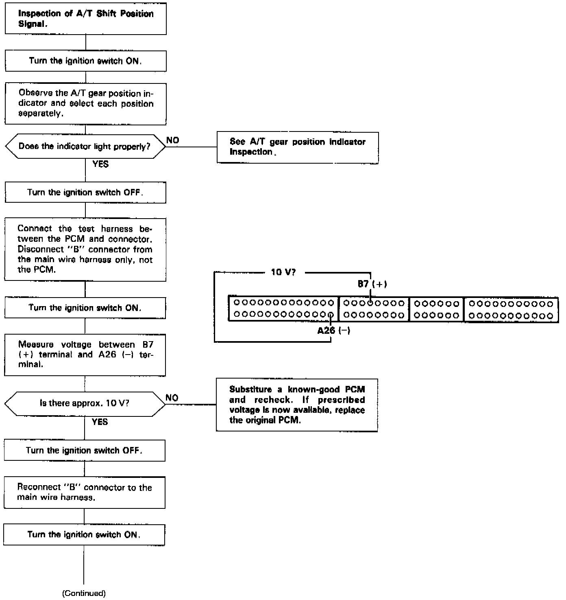
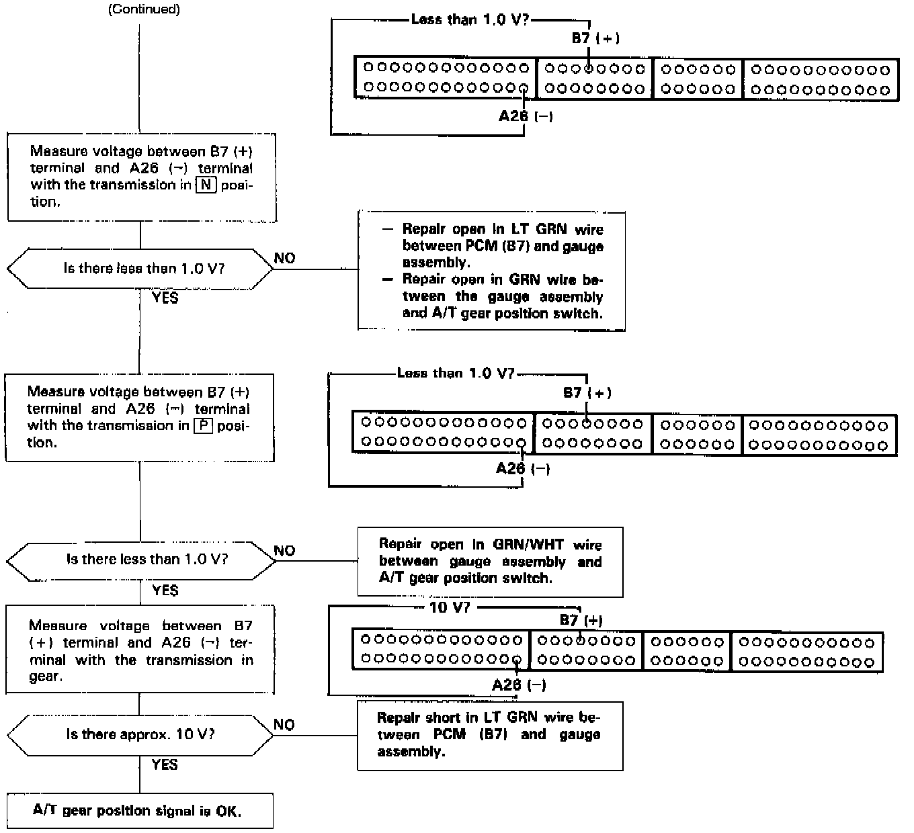

Operation CHARM
: Car repair manuals for everyone.
Home
>>
Acura
>>
1995
>>
Legend Coupe V6-3206cc 3.2L SOHC FI
>>
Repair and Diagnosis
>>
Powertrain Management
>>
Sensors and Switches - Powertrain Management
>>
Sensors and Switches - Computers and Control Systems
>>
Transmission Position Sensor/Switch
>>
Testing and Inspection
Transmission Position Sensor/Switch: Testing and Inspection


This signals the PCM (Powertrain Control Module) when the transmission is in (N) or (P) position.